Префектура Гумма · Одзе · горный отель
LUCY Oze Hatomachi: горный отель у перевала Хатомати, откуда начинается тропа в Одзе
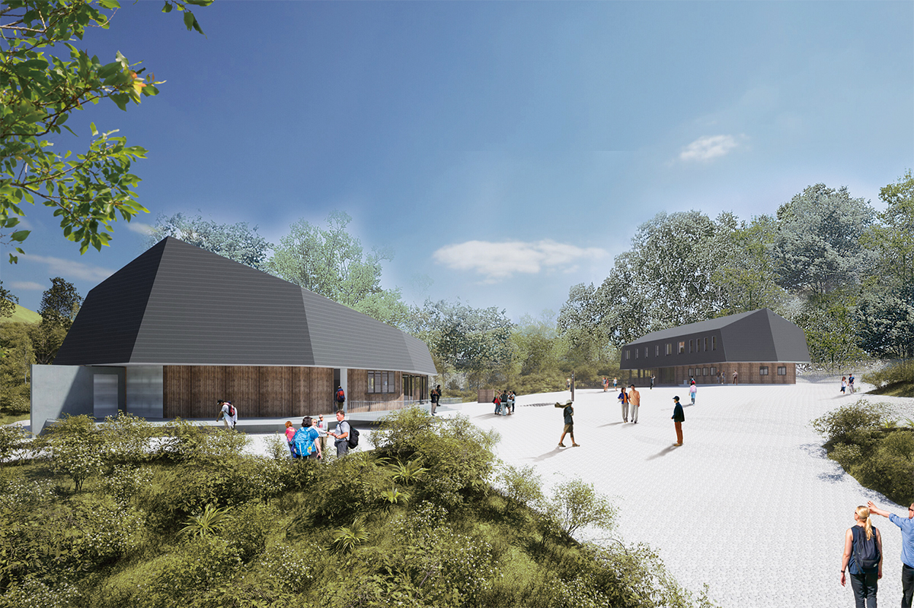
В 2025 году Hoshino Resorts открыла марку LUCY, отели для тех, кто хочет в горы, но не готов к спартанскому горному приюту. Первый такой отель встал у перевала Хатомати, с которого начинается одна из самых популярных троп в Одзе.
Идея
Зачем Японии горные отели
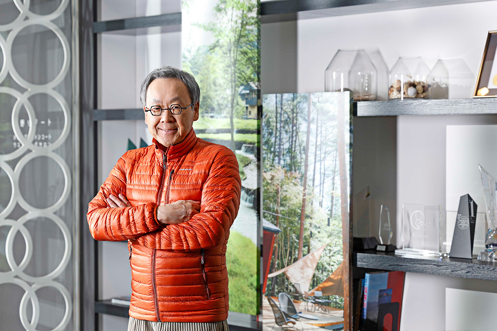
LUCY стала шестой гостиничной маркой Hoshino Resorts. В 2025 году компания управляла 71 объектом в Японии и за рубежом, и у каждой марки свой гость и своя идея. Глава компании Ёсихару Хосино родился в 1960 году в Каруидзаве, в 1991 году возглавил семейный онсэн-рёкан, из которого выросла вся сеть, и ставит себе цель кататься на лыжах 80 дней в год.
«Иностранных туристов в Японии становится всё больше, но больше 70 процентов их ночёвок приходится на крупные города. Города дают прежде всего культурный туризм, и в нём Японии нет равных. А вот природный туризм у нас слабое место. При этом в стране 35 национальных парков и природа от севера до юга очень разная. Если развивать природный туризм, это разгрузит перегруженные города и поможет экономике провинции»
Ёсихару Хосино, глава Hoshino Resorts
С морем, по словам Хосино, в Японии многое уже получилось, потому что до побережья легко добраться. С горами сложнее: инфраструктуры часто нет. При этом в Швейцарии и Канаде горный туризм давно стал опорой, а в Японии хороших гор много, и вокруг них веками складывались вера, культура и туризм.
Поэтому внимание компании привлекли горные приюты. Их в стране больше 350, и Хосино сам часто в них останавливается. Но большинство устроены по старинке, и человеку, который не привык к походам или боится ночёвки в горах, там непросто. LUCY задумана как отель, где в горах может переночевать любой.
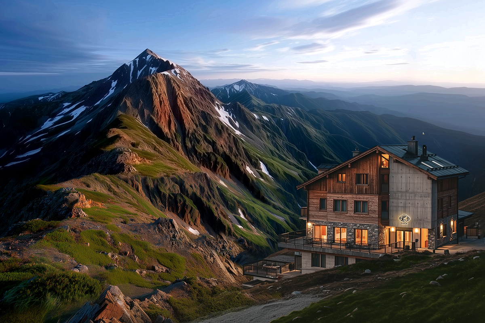
Технологии
Отель, который обходится сам
Главное, что предлагает LUCY, это удобная ночёвка, какой в японских горах до сих пор почти не было. Удобство и бережное отношение к природе компания хочет совместить с помощью новых технологий.
«Ограниченный запас подземной воды мы пускаем по кругу, электричество берём от солнечных панелей и аккумуляторов, а для отходов ставим новейшие установки, которые разработали на случай стихийных бедствий. Мы хотим, чтобы LUCY обходилась своими силами и не нагружала природу»
Ёсихару Хосино
Технологии, по мысли Хосино, помогают и людям. Грузы в горы доставлять трудно, работа в приютах тяжёлая, и многим хозяевам некому передать дело. Из-за этого приюты урезают услуги, а так долго продержаться нельзя.
Название марке дала Изабелла Люси Бёрд (1831–1904), английская путешественница XIX века. Она приехала в Японию в начале эпохи Мэйдзи и объездила многие края страны. Как она когда-то шагнула в незнакомый мир, так и гости LUCY, по замыслу компании, должны решиться на новое для себя путешествие.
«LUCY нужна, чтобы горы стали обычным выбором для поездки. Правильного ответа мы пока не знаем, но начинать надо с первого шага. Мы верим, что за LUCY откроется новый мир японского природного туризма, и начинаем с Одзе»
Ёсихару Хосино
Место
Перевал Хатомати: вход в Одзе
Национальный парк Одзе подходит и тем, кто только начинает ходить в горы. Первый отель LUCY открылся 1 сентября 2025 года у перевала Хатомати в деревне Катасина. Это один из главных входов в парк. Личные машины сюда не пускают, поэтому от района Токура к перевалу едут на рейсовом автобусе или такси. Особенно популярен маршрут от Хатомати по болотистой равнине Одзегахара: до неё 3,3 км с перепадом высот около 200 метров, вниз примерно час, обратно в гору около полутора часов.
От остановки до отеля три минуты пешком, а девиз отеля обещает, что здесь начинается лучший поход по Одзе.
«Если переночевать здесь, утром можно выйти на тропу раньше, чем придёт первый автобус. В горах самые красивые часы первые после рассвета. Увидеть эти виды раньше толпы, которая приезжает автобусами, и есть главное преимущество отеля»
Ёсихару Хосино
Номера
Свой угол и горячий душ
Тем, кто остаётся на ночь, отель готовит свои занятия на закате, вечером и ранним утром. А чтобы снять главные страхи перед ночёвкой в горах, марка дала гостям шесть обещаний: отдельная спальня, привычный японский туалет с функцией биде, душ и умывальная комната, ужин с мясом, рыбой и яйцами, магазин в самом отеле и безлимитные зарядка и вайфай.
«Смартфон в горах давно стал вещью для безопасности: по нему проверяют, где ты, и через него вызывают помощь. Поэтому зарядка и вайфай без ограничений. Спокойствие гостя для горной базы очень важно»
Ёсихару Хосино
В отеле 25 номеров. Есть комнаты максимум на четверых и одноместные ячейки в общем коридоре, где можно уединиться.
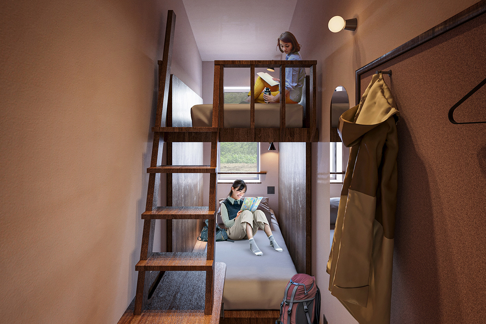
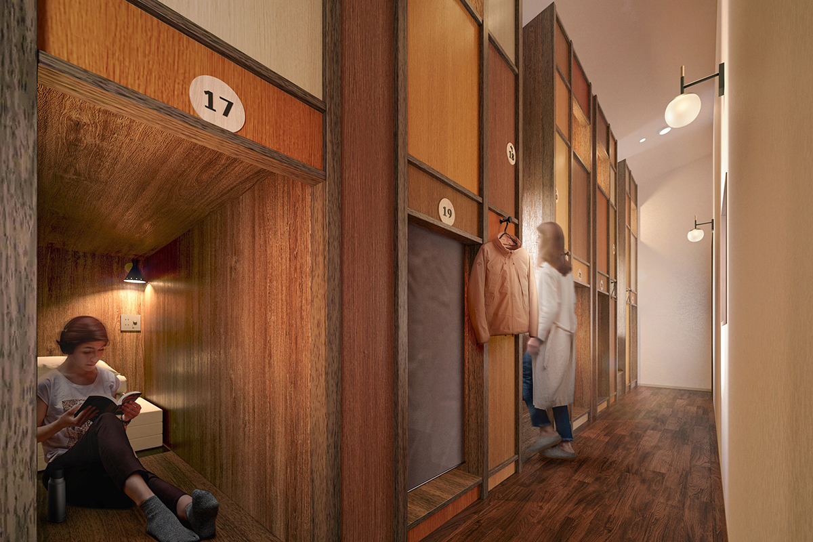
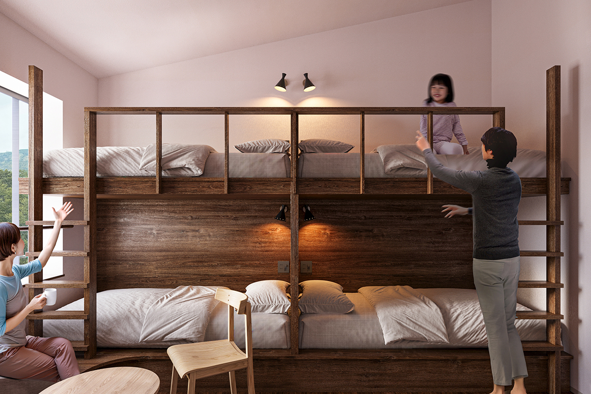
Еда
Свиной суп и инари в дорогу
Главное блюдо ужина: «LUCY тондзиру», сытный суп со свининой и овощами, который согревает после дня в горах. К нему подают рыбу, яйца и закуски из даров гор.
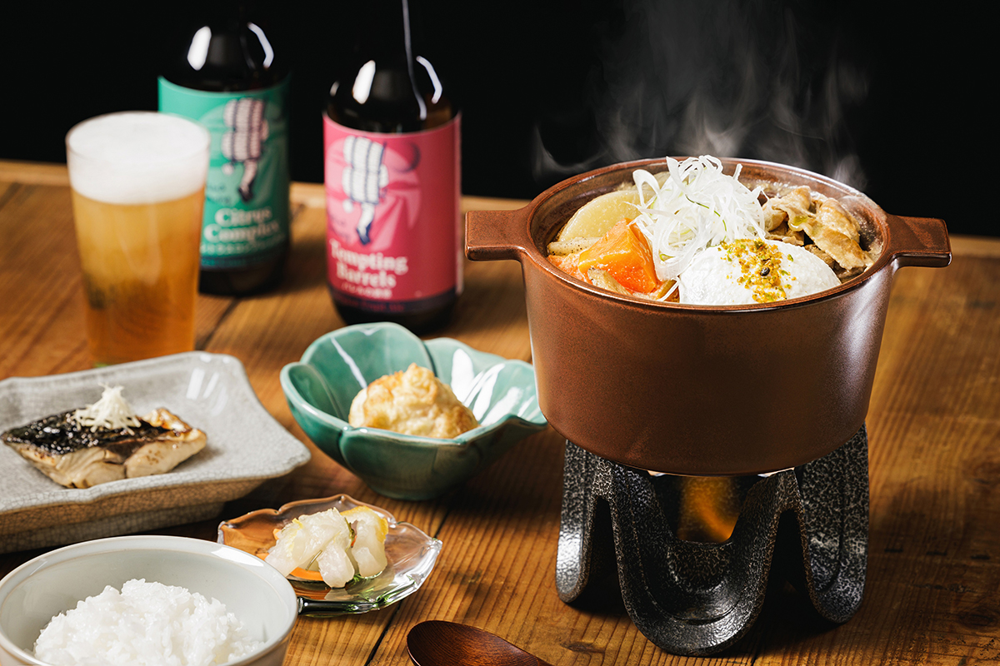
Завтрак покупают в «последнем магазине перед горами», Food & Drink Station, который работает в отеле круглые сутки. Там стоит взять инари-суши: рис в обжаренном тофу с пятью вкусами, среди них чёрный кунжут, васаби и карри.
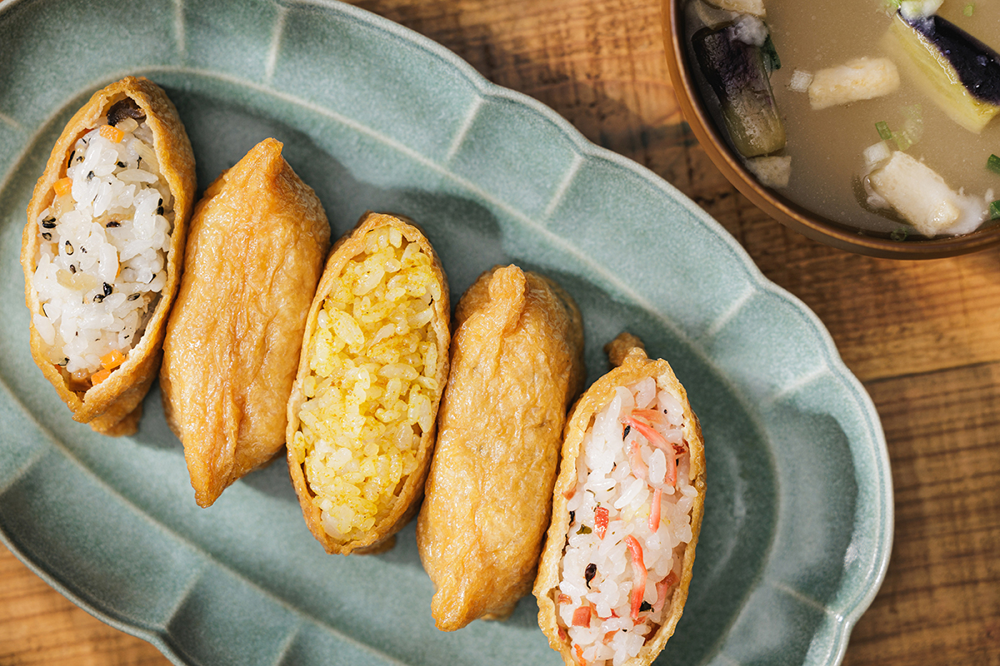
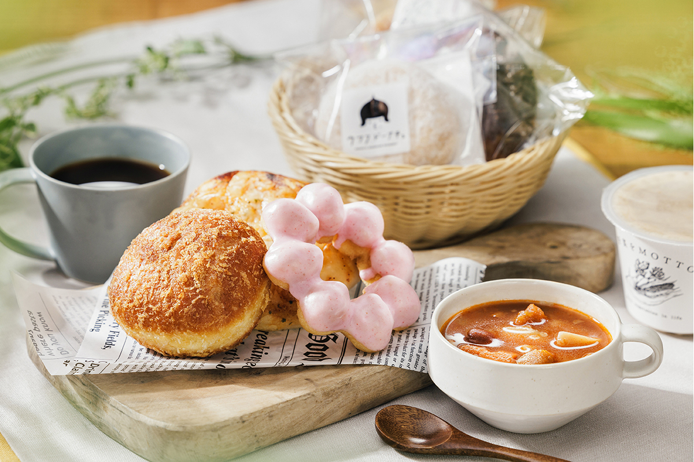
Кафе
Hatomachi Base: зайти можно без ночёвки
Рядом с отелем работает Hatomachi Base Cafe & Shop, куда можно зайти и без ночёвки. Кафе открылось раньше отеля, 1 августа 2025 года. Здесь удобно выпить кофе или пообедать до и после похода.
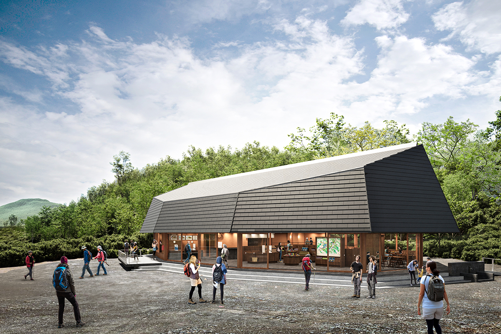
В кафе стоит попробовать мягкое мороженое из фасоли ханамамэ, которым славится Одзе: фасоли в нём много, и вкус у него густой. В магазине продают походное снаряжение, вещи марки LUCY и сувениры.
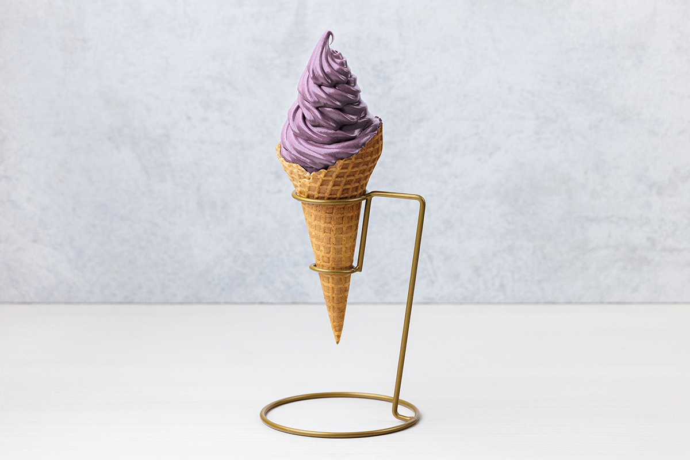
Отель работает только в тёплый сезон, вместе с открытием троп Одзе. Сезон 2026 года длится с 22 апреля (полностью отель открылся 29 апреля) по 24 октября, кафе в 2026 году открылось 18 апреля.
LUCY Oze Hatomachi by Hoshino Resorts
- Адрес
- префектура Гумма, район Тонэ, деревня Катасина, Токура, Накахараяма, 898-14
- Телефон
- +81 50-3134-8099 (центр бронирования LUCY)
- Номера
- 25
- Цены / Вход
- от 14 050 иен за ночь с ужином, с налогом и сервисным сбором (2025)
- Заезд / выезд
- 14:00 / 10:00
- Как добраться
- 3 минуты пешком от остановки «Хатомати-тогэ» автобуса компании Kan-etsu Kotsu
Hatomachi Base Cafe & Shop by Hoshino Resorts
- Адрес
- префектура Гумма, район Тонэ, деревня Катасина, Токура, Накахараяма, 898-18
- Как добраться
- у перевала Хатомати, рядом с отелем LUCY Oze Hatomachi
Фото: Норихито Судзуки.